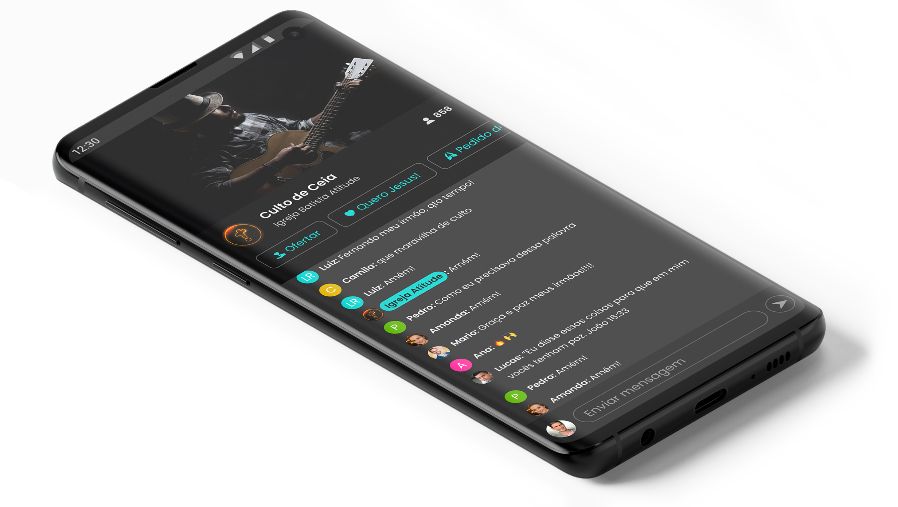
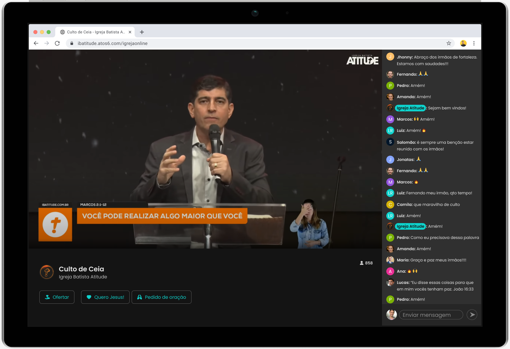
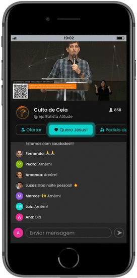
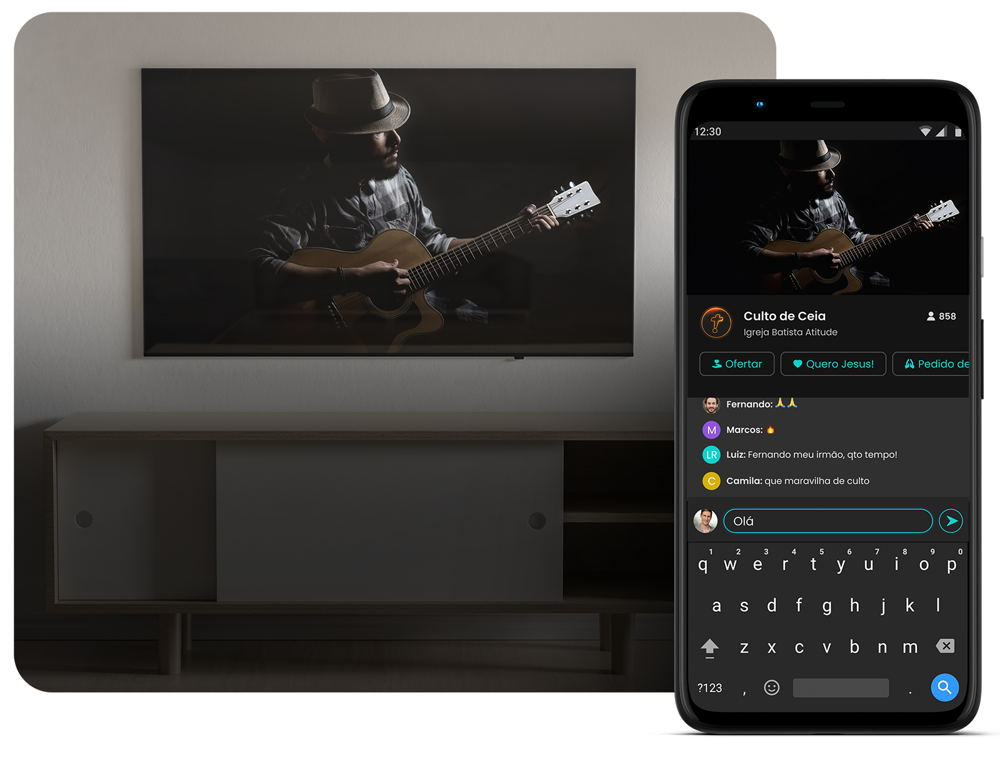

Conheça o Atos6 Online e crie uma nova experiência para aumentar o engajamento, o alcance e as contribuições. Implemente agora mesmo a única plataforma brasileira integrada, com tela única, exclusiva e totalmente gratuita.

Conheça o Atos6 Online
Gere maior engajamento
Basta um link e sua igreja terá a transmissão online, dízimos, ofertas, conversão e oração em um mesmo ambiente.
Ao acessar o link igreja.atos6.com/online ou o seu link customizado, como igreja.com, a pessoa entra em um ambiente exclusivo da sua igreja, com foco na transmissão do culto e seus momentos.

Integração total
Tenha em uma única plataforma os pedidos de oração, os contatos de todos os novos convertidos, de seus membros, visitantes e registros de dizimistas e ofertantes por celebração.
Aproveite e destaque cada momento durante o culto.

Experiência única
Ofereça uma experiência única durante o culto. Pensamos em uma tela única que propicia uma atenção maior do visitante e do membro.
Eles só precisam acessar um link para participar de tudo, facilitando a retenção da transmissão ao vivo, as orações, a integração e a contribuição de dízimos e ofertas.
O Atos6 Online é um centralizador de todos os momentos do culto online. Utilize sua plataforma de compartilhamento de vídeos favorita para transmitir seus cultos gravados ou ao vivo através do Atos6 Online.
Programe todas as celebrações da igreja por dia e horários, e habilite as ferramentas por culto de acordo com a sua demanda. Tudo de forma rápida, ágil e simples.
Dízimos e ofertas de forma digital, em um clique.
O Atos6 Online está integrado com o Atos6 Pay, mais uma ferramenta sem taxa de adesão e mensalidade para receber e gerenciar todas as contribuições da sua igreja. Habilite e comece a receber contribuições no Atos6 online.
Compartilhe o link único e exclusivo da igreja com membros e visitantes, antes e durante a transmissão.
Indicadores
Números de visitantes, número de conversões e pedidos de oração por celebração.
Design responsivo
Plataforma otimizada para uma experiência perfeita em smartphones e outros dispositivos móveis.
Domínio personalizado
Configure o Atos6 Online com o domínio da igreja deixando a página de transmissão com a URL que deseja.
Assista pela TV e interaja pelo smartphone
Você pode entrar no link por qualquer dispositivo, compartilhar e conectar na sua SmartTV.

Compromisso Atos6
Fundado e gerenciado por cristãos.
Fundado em 2013, o Atos6 se mantém fiel ao seu propósito de ser uma solução parceira, única e 100% comprometida com o avanço do Reino de Deus e sua igreja.
Nosso compromisso é com Cristo, com a Palavra e com os valores do Reino. Por isso, nosso principal objetivo com o Atos6 Online é fazer com que se multiplique o alcance e os recursos da Igreja, para que mais pessoas conheçam a Jesus e sejam transformadas. O Atos6 Online sempre será totalmente gratuito e continuaremos investindo em melhorias e inovações.
Plataforma ainda mais completa para clientes do Atos6 Gestão
Novos convertidos
A plataforma já está integrada, simplificando ainda mais o acompanhamento e integração.
Doações
As doações recebidas são conciliadas automaticamente com a gestão financeira.
Células
Em breve mais integrações para facilitar e agilizar o dia-a-dia da igreja, incluindo as células ou pequenos grupos.
Consigo assistir pelo celular, computador, tablet e smartv?
Sim, o Atos6 Online é multiplataforma, você pode assistir por qualquer dispositivo conectado à internet.
Como ficam a monetização e as visualização do Youtube?
O Youtube contabiliza as visualizações e a monetização de todas transmissões feitas pelo Atos6 Online.
O Atos6 Online cobra alguma mensalidade?
Não, o Atos6 Online é totalmente gratuito, pois nasceu para abençoar as igrejas.
Preciso mudar a forma como estou fazendo minhas transmissões para usar a plataforma?
Não, basta colocar o link do culto no Youtube ou Facebook “embedado” na plataforma que traz mais recursos que estas redes sociais, como ofertas e aceitar Jesus na mesma tela, em apenas um clique.
É preciso um aplicativo para assistir a transmissão?
A plataforma é acessada através do navegador. O Atos6 Online é uma plataforma projetada para facilitar o acesso, basta acessar o link para assistir ao culto e participar.